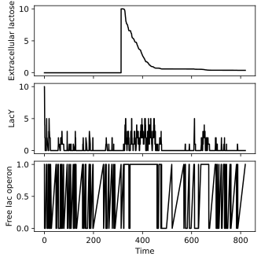

The lac operon¶
The E. coli lac operon controls the production of enzymes needed to metabolize lactose and is regulated in large part by lactose availability. This example model includes
LacI (
I) repression of the lac operon via blocking of the operator (O),lactose (
L) transport by LacY (Y) permease,conversion of lactose to allolactose (
A) by LacZ β-galactosidase (Z),and allolactose-mediated derepression of the operon.
[2]:
from pykappa import System
system = System.from_ka(
"""
%init: 1 O(i[.])
%init: 1 I(o[.])
%init: 10 Y()
%init: 10 Z()
%obs: 'Extracellular lactose' |L(loc{out})| / 100
%obs: 'LacY' |Y()|
%obs: 'Free lac operon' |O(i[.])|
I(o[.]), O(i[.]) <-> I(o[1]), O(i[1]) @ 1, 0.1 // Repress the lac operon
Y(), L(loc{out}) -> Y(), L(loc{in}) @ 0.01 // Transport lactose into the cell
Z(), L(loc{in}) -> Z(), A(z[.], i[.]) @ 1 // Convert lactose into allolactose
A(i[.]), I(o[.]) <-> A(i[1]), I(o[1]) @ 1, 0.1 // Deactivate the repressor by allolactose
O(i[.]), ., . -> O(i[.]), Z(), Y() @ 1 // Express the lac operon
L(loc{in}) -> . @ 1 // Metabolize lactose
// Degradation
A() -> . @ 0.1
Y() -> . @ 0.5
Z() -> . @ 0.5
"""
)
Let us illustrate the local transformations the rules specify. (Note, however, that the conditions for these transformations are not detailed in the graph representation.)
[3]:
system.rule_graph()
---------------------------------------------------------------------------
FileNotFoundError Traceback (most recent call last)
File /opt/hostedtoolcache/Python/3.12.13/x64/lib/python3.12/site-packages/graphviz/backend/execute.py:76, in run_check(cmd, input_lines, encoding, quiet, **kwargs)
75 kwargs['stdout'] = kwargs['stderr'] = subprocess.PIPE
---> 76 proc = _run_input_lines(cmd, input_lines, kwargs=kwargs)
77 else:
File /opt/hostedtoolcache/Python/3.12.13/x64/lib/python3.12/site-packages/graphviz/backend/execute.py:96, in _run_input_lines(cmd, input_lines, kwargs)
95 def _run_input_lines(cmd, input_lines, *, kwargs):
---> 96 popen = subprocess.Popen(cmd, stdin=subprocess.PIPE, **kwargs)
98 stdin_write = popen.stdin.write
File /opt/hostedtoolcache/Python/3.12.13/x64/lib/python3.12/subprocess.py:1026, in Popen.__init__(self, args, bufsize, executable, stdin, stdout, stderr, preexec_fn, close_fds, shell, cwd, env, universal_newlines, startupinfo, creationflags, restore_signals, start_new_session, pass_fds, user, group, extra_groups, encoding, errors, text, umask, pipesize, process_group)
1023 self.stderr = io.TextIOWrapper(self.stderr,
1024 encoding=encoding, errors=errors)
-> 1026 self._execute_child(args, executable, preexec_fn, close_fds,
1027 pass_fds, cwd, env,
1028 startupinfo, creationflags, shell,
1029 p2cread, p2cwrite,
1030 c2pread, c2pwrite,
1031 errread, errwrite,
1032 restore_signals,
1033 gid, gids, uid, umask,
1034 start_new_session, process_group)
1035 except:
1036 # Cleanup if the child failed starting.
File /opt/hostedtoolcache/Python/3.12.13/x64/lib/python3.12/subprocess.py:1955, in Popen._execute_child(self, args, executable, preexec_fn, close_fds, pass_fds, cwd, env, startupinfo, creationflags, shell, p2cread, p2cwrite, c2pread, c2pwrite, errread, errwrite, restore_signals, gid, gids, uid, umask, start_new_session, process_group)
1954 if err_filename is not None:
-> 1955 raise child_exception_type(errno_num, err_msg, err_filename)
1956 else:
FileNotFoundError: [Errno 2] No such file or directory: PosixPath('dot')
The above exception was the direct cause of the following exception:
ExecutableNotFound Traceback (most recent call last)
File /opt/hostedtoolcache/Python/3.12.13/x64/lib/python3.12/site-packages/graphviz/jupyter_integration.py:98, in JupyterIntegration._repr_mimebundle_(self, include, exclude, **_)
96 include = set(include) if include is not None else {self._jupyter_mimetype}
97 include -= set(exclude or [])
---> 98 return {mimetype: getattr(self, method_name)()
99 for mimetype, method_name in MIME_TYPES.items()
100 if mimetype in include}
File /opt/hostedtoolcache/Python/3.12.13/x64/lib/python3.12/site-packages/graphviz/jupyter_integration.py:112, in JupyterIntegration._repr_image_svg_xml(self)
110 def _repr_image_svg_xml(self) -> str:
111 """Return the rendered graph as SVG string."""
--> 112 return self.pipe(format='svg', encoding=SVG_ENCODING)
File /opt/hostedtoolcache/Python/3.12.13/x64/lib/python3.12/site-packages/graphviz/piping.py:104, in Pipe.pipe(self, format, renderer, formatter, neato_no_op, quiet, engine, encoding)
55 def pipe(self,
56 format: typing.Optional[str] = None,
57 renderer: typing.Optional[str] = None,
(...) 61 engine: typing.Optional[str] = None,
62 encoding: typing.Optional[str] = None) -> typing.Union[bytes, str]:
63 """Return the source piped through the Graphviz layout command.
64
65 Args:
(...) 102 '<?xml version='
103 """
--> 104 return self._pipe_legacy(format,
105 renderer=renderer,
106 formatter=formatter,
107 neato_no_op=neato_no_op,
108 quiet=quiet,
109 engine=engine,
110 encoding=encoding)
File /opt/hostedtoolcache/Python/3.12.13/x64/lib/python3.12/site-packages/graphviz/_tools.py:185, in deprecate_positional_args.<locals>.decorator.<locals>.wrapper(*args, **kwargs)
177 wanted = ', '.join(f'{name}={value!r}'
178 for name, value in deprecated.items())
179 warnings.warn(f'The signature of {func_name} will be reduced'
180 f' to {supported_number} positional arg{s_}{qualification}'
181 f' {list(supported)}: pass {wanted} as keyword arg{s_}',
182 stacklevel=stacklevel,
183 category=category)
--> 185 return func(*args, **kwargs)
File /opt/hostedtoolcache/Python/3.12.13/x64/lib/python3.12/site-packages/graphviz/piping.py:121, in Pipe._pipe_legacy(self, format, renderer, formatter, neato_no_op, quiet, engine, encoding)
112 @_tools.deprecate_positional_args(supported_number=1, ignore_arg='self')
113 def _pipe_legacy(self,
114 format: typing.Optional[str] = None,
(...) 119 engine: typing.Optional[str] = None,
120 encoding: typing.Optional[str] = None) -> typing.Union[bytes, str]:
--> 121 return self._pipe_future(format,
122 renderer=renderer,
123 formatter=formatter,
124 neato_no_op=neato_no_op,
125 quiet=quiet,
126 engine=engine,
127 encoding=encoding)
File /opt/hostedtoolcache/Python/3.12.13/x64/lib/python3.12/site-packages/graphviz/piping.py:149, in Pipe._pipe_future(self, format, renderer, formatter, neato_no_op, quiet, engine, encoding)
146 if encoding is not None:
147 if codecs.lookup(encoding) is codecs.lookup(self.encoding):
148 # common case: both stdin and stdout need the same encoding
--> 149 return self._pipe_lines_string(*args, encoding=encoding, **kwargs)
150 try:
151 raw = self._pipe_lines(*args, input_encoding=self.encoding, **kwargs)
File /opt/hostedtoolcache/Python/3.12.13/x64/lib/python3.12/site-packages/graphviz/backend/piping.py:212, in pipe_lines_string(engine, format, input_lines, encoding, renderer, formatter, neato_no_op, quiet)
206 cmd = dot_command.command(engine, format,
207 renderer=renderer,
208 formatter=formatter,
209 neato_no_op=neato_no_op)
210 kwargs = {'input_lines': input_lines, 'encoding': encoding}
--> 212 proc = execute.run_check(cmd, capture_output=True, quiet=quiet, **kwargs)
213 return proc.stdout
File /opt/hostedtoolcache/Python/3.12.13/x64/lib/python3.12/site-packages/graphviz/backend/execute.py:81, in run_check(cmd, input_lines, encoding, quiet, **kwargs)
79 except OSError as e:
80 if e.errno == errno.ENOENT:
---> 81 raise ExecutableNotFound(cmd) from e
82 raise
84 if not quiet and proc.stderr:
ExecutableNotFound: failed to execute PosixPath('dot'), make sure the Graphviz executables are on your systems' PATH
[3]:
<graphviz.sources.Source at 0x7fd5f3d5c500>
We simulate the system first without lactose, then add extracellular lactose to observe the regulatory response.
[4]:
# Simulate a while with no extracellular lactose
while system.time < 300:
system.update()
# Add extracellular lactose and continue simulating
system.mixture.add("L(loc{out})", 1000)
while system.time < 800:
system.update()
[5]:
system.monitor.plot(figsize=(4.5, 4.5));

Without lactose, the operon remains mostly repressed. When extracellular lactose is added,
existing LacY transports some lactose into the cell,
intracellular lactose is converted to allolactose by LacZ,
allolactose inactivates the LacI repressor,
derepressing the operon and leading to increased LacY and LacZ production.
As lactose is metabolized the operon is again repressed.